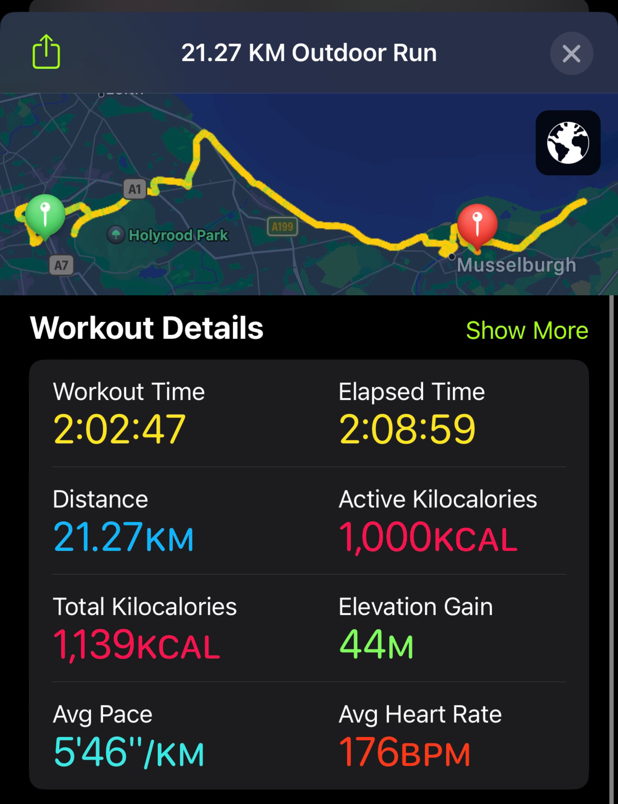
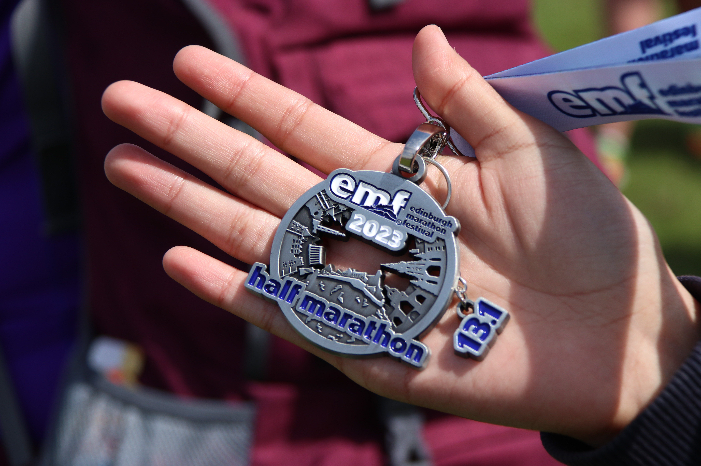

"Embracing the 'New Run': A Journey of Resilience and Triumph at the Edinburgh Half Marathon"
 A month ago, amid stress and searching for a refuge, I found solace in running. To affirm my commitment to this newfound path, I registered for the Edinburgh Half Marathon.
A month ago, amid stress and searching for a refuge, I found solace in running. To affirm my commitment to this newfound path, I registered for the Edinburgh Half Marathon.
My journey began on April 25th with a modest 3km run. Fast forward to yesterday, I realized a personal triumph: I completed my first half marathon, covering a challenging distance of 21.08km in just over two hours.
 As I hit the midway point of my run, an empowering thought crossed my mind: this is my 'new run'. It marked a profound exploration of my physical capabilities, pushing the limits of what I thought possible.
'Neuron' has held a special place in my heart throughout these trials, representing my unwavering academic pursuits.
 I am blessed to have recovered from my illness. Despite all hardships, I've bravely continued in my pursuit of the life I desire.
As I approached the finish line of the half marathon, a surge of emotions washed over me. I proved to myself that I was not defeated by the disease; I was strong enough to embrace life's challenges and to live life on my terms.
The 'new run' signifies my resolve to move forward, to embrace the promise of new beginnings, and to face the future with strength and optimism.